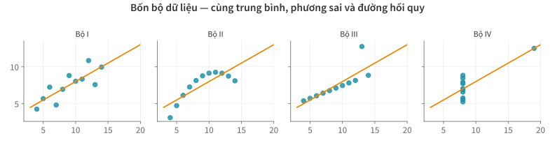
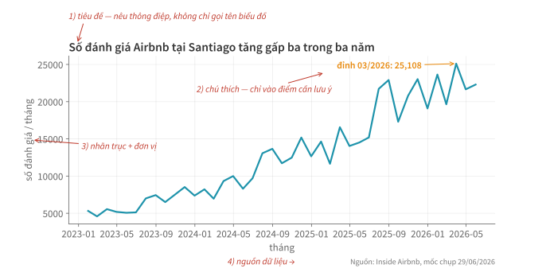
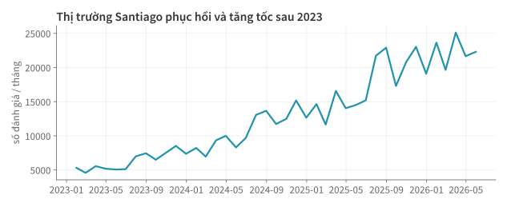
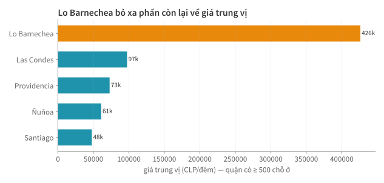
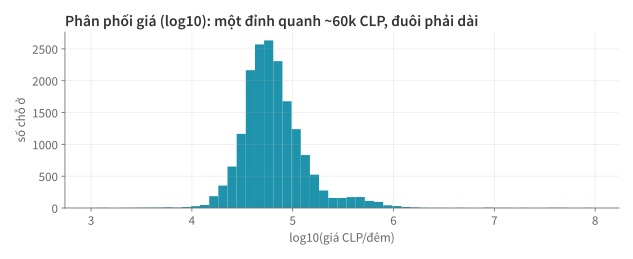
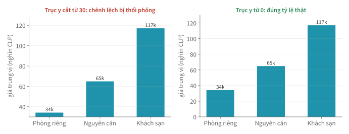

Lập trình
xử lý dữ liệu
Học kì 1, năm học 2026–2027
Viện Trí tuệ nhân tạo, Trường ĐH Công nghệ, ĐHQGHN
Bài 12
Trực quan hoá cơ bản
matplotlib, pandas plot và cách tạo biểu đồ tự giải thích được.
Buổi trước
- LLM trích xuất dữ liệu phi cấu trúc; chất lượng được đo bằng tập dữ liệu gán nhãn thủ công.
- Sau bước làm sạch và trích xuất, dữ liệu đã sẵn sàng để trình bày bằng biểu đồ.
Tổng quan
- Vì sao cần biểu đồ và nên chọn dạng nào?
- matplotlib: Figure, Axes và bốn dạng biểu đồ cơ bản
- pandas
.plotvà xuất hình từ pipeline - Biểu đồ rõ ràng và trung thực
- Làm việc với AI thì sao?
1.
Vì sao cần biểu đồ?
Nên chọn dạng nào?
describe() không cho biết hình dạng của dữ liệu.
Bốn bộ dữ liệu cùng bảng thống kê

Câu hỏi chọn dạng biểu đồ
| Bạn muốn nhìn thấy… | Chọn biểu đồ dạng… | Ví dụ trong buổi này |
|---|---|---|
| Diễn biến theo thời gian | đường (line) | đánh giá theo tháng |
| So sánh giữa các nhóm | cột (bar; dùng thanh ngang nếu tên dài) | giá theo quận |
| Hình dáng phân phối | histogram | phân phối giá |
| Quan hệ hai đại lượng | phân tán (scatter) | vị trí × giá |
Chọn dạng biểu đồ dựa trên câu hỏi phân tích. Nếu chỉ cần nhấn mạnh một con số thì không cần vẽ biểu đồ.
2.
matplotlib:
Figure, Axes
& bốn dạng cơ bản
Giao diện lập trình chung cho nhiều dạng biểu đồ.
Bộ đôi fig và ax
import matplotlib.pyplot as plt
fig, ax = plt.subplots(figsize=(8, 4)) # tờ giấy + khung vẽ
ax.plot(thang.index, thang.values) # vẽ lên khung
ax.set_title("...")
ax.set_ylabel("số đánh giá / tháng")
plt.show()
- Figure là toàn bộ hình; Axes là từng vùng vẽ trong hình.
- Dùng ax.* giúp kiểm soát từng chi tiết và thuận tiện khi ghép nhiều vùng vẽ.
Đọc một biểu đồ hoàn chỉnh

Biểu đồ đường: diễn biến theo thời gian
# bỏ hai kỳ cuối chưa đủ dữ liệu
thang = (rv.set_index("date")
.resample("ME").size()
.loc["2023":].iloc[:-2])
fig, ax = plt.subplots()
ax.plot(thang.index,
thang.values,
color="#1E93AB", lw=2)

Kết quả tổng hợp theo tháng ở bài 8 được dùng trực tiếp để vẽ biểu đồ.
Biểu đồ thanh ngang: xếp hạng nhóm
top = (tk[tk["n"] >= 500]
.nlargest(8, "median")
.sort_values("median"))
bars = ax.barh(top.index,
top["median"])
ax.bar_label(bars, ...)

Thanh ngang giúp đọc tên quận dễ hơn. bar_label ghi giá trị
trực tiếp; màu cam chỉ dùng cho nhóm cần nhấn mạnh.
Histogram: hình dạng phân phối
ax.hist(np.log10(gia),
bins=55)
ax.set_xlabel(
"log10(giá CLP/đêm)")

Thang log giúp quan sát rõ phân phối giá. Số khoảng bins
quá ít làm mất cấu trúc; quá nhiều làm tăng nhiễu.
Biểu đồ phân tán: 18.000 điểm theo vị trí
mau = np.where(
s["price"] > median,
"#E8890C", "#1E93AB")
ax.scatter(s["longitude"],
s["latitude"],
s=6, c=mau,
# 0 trong→1 đục
alpha=0.45)

Kinh độ, vĩ độ và hai nhóm màu tạo thành một bản đồ điểm đơn giản.
alpha=0.45 — độ trong suốt thấp — giúp hạn chế hiện tượng các điểm che lấp nhau.
subplots: đặt hai vùng vẽ cạnh nhau
fig, axes = plt.subplots(1, 2, figsize=(10, 4), sharey=True)
axes[0].hist(gia_t9, bins=40)
axes[0].set_title("09/2025")
axes[1].hist(gia_t6, bins=40)
axes[1].set_title("06/2026")
Khi so sánh hai mốc chụp, sharey=True dùng chung thang đo, tránh tạo ấn tượng sai do hai trục khác nhau.
3.
pandas .plot
& xuất hình từ pipeline
Vẽ nhanh khi khám phá dữ liệu.
.plot: vẽ nhanh khi khám phá dữ liệu
thang.plot() # đường
df["room_type"].value_counts().plot.barh() # thanh ngang
df["price"].plot.hist(bins=50) # histogram
pandas cũng gọi matplotlib và tự tạo các thành phần mặc định.
.plot phù hợp để khám phá nhanh dữ liệu; fig, ax phù hợp với hình chất lượng cao đưa vào báo cáo.
savefig: xuất hình từ pipeline
fig.savefig("figures/gia_theo_quan.png",
dpi=150, bbox_inches="tight")
figures/ khi chạy pipeline.
Khi cần sửa hình, hãy sửa mã nguồn và chạy lại thay vì chỉnh tay hoặc chụp màn hình.
Hai cách lưu hình: raster và vector
# matplotlib chọn định dạng theo đuôi file
fig.savefig("line.svg") # cho web
fig.savefig("bao_cao.pdf") # cho báo cáo
fig.savefig("map.png", dpi=150) # ảnh raster
Ảnh raster như PNG lưu một lưới điểm ảnh (pixel); phóng to sẽ vỡ, dung lượng
nặng theo số điểm ảnh — nên dpi chỉ có nghĩa với ảnh raster. Ảnh vector như
SVG và PDF lưu đường nét và chữ; phóng bao nhiêu cũng nét,
dung lượng nặng theo số đối tượng vẽ.
Chọn định dạng theo mật độ điểm
| Hình | PNG | SVG |
|---|---|---|
| Đường, ~41 điểm | 48 KB | 23 KB |
| Phân tán, 18.000 điểm | 156 KB | ~2,7 MB |
PDF cũng là ảnh vector, dùng cho báo cáo và in ấn: 6 KB cho biểu đồ đường, 296 KB cho bản đồ điểm.
rcParams: khai báo phong cách một lần
plt.rcParams.update({
"figure.facecolor": "white",
"axes.spines.top": False, "axes.spines.right": False,
"axes.grid": True, "grid.alpha": 0.25,
"font.size": 12,
})
Khai báo một lần ở đầu notebook hoặc script để mọi hình có cùng phong cách. Tính nhất quán của các biểu đồ trong báo cáo là một tiêu chí quan trọng.
4.
Biểu đồ rõ ràng
và trung thực
Cách trình bày có thể khiến người đọc hiểu sai dù số liệu đúng.
Trục y bị cắt làm phóng đại chênh lệch

Giảm chi tiết trang trí, tăng tín hiệu
- Bỏ đường viền trên/phải và làm mờ lưới để dữ liệu nổi bật hơn.
- Mỗi hình nên truyền đạt một thông điệp chính.
- Dùng màu nhất quán; chỉ dùng màu thứ hai để nhấn một đối tượng cần chú ý.
Tiêu chí kiểm tra
- Tiêu đề nêu thông điệp, không chỉ gọi tên biểu đồ.
- Trục có nhãn và đơn vị; biểu đồ cột bắt đầu từ 0; hình so sánh dùng chung thang đo.
- Ghi nguồn dữ liệu và mốc chụp.
- Người đọc có thể hiểu đúng hình mà không cần đọc tiêu đề hay không?
Tổng kết
- Thống kê mô tả không cho thấy toàn bộ cấu trúc; dạng biểu đồ phải phù hợp với câu hỏi.
fig, axcùng biểu đồ đường, cột, histogram và phân tán đáp ứng phần lớn nhu cầu cơ bản..plotdùng để khám phá;savefigvàrcParamshỗ trợ xuất hình nhất quán.- Biểu đồ cần dùng thang đo phù hợp, có thông điệp rõ và ghi nguồn dữ liệu.
Làm việc với AI thì sao?
Kiểm chứng thế nào?
- Kiểm tra mọi hình do AI sinh bằng danh sách ở phần 4.
- Đối chiếu ít nhất một giá trị trên hình với dữ liệu gốc, chẳng hạn kiểm tra
thanh lớn nhất bằng
nlargest.
Đọc thêm
- McKinney, Python for Data Analysis, 3rd ed. — ch. 9 (Plotting and Visualization).
- VanderPlas, Python Data Science Handbook, 2nd ed. — Part 4 (Matplotlib).
- 📖 Tự học: matplotlib docs — Anatomy of a figure.